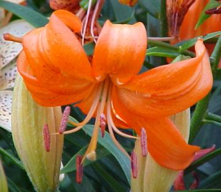
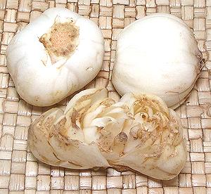

Lanzhou Lily

[Lilium davidii var. unicolor]
This lily is native to mountainous regions from northwestern China
south as far as Yunan. They are also found in the far northeastern
tribal regions of India as well as Bhutan and Tibet. This lily,
growing to about 5 feet tall, produces crisp sweet edible bulbs
up to 1-3/4 inches diameter. These are used in stir fries and in
various other ways. The flowers are not aromatic, so are not used
for food. The center for cultivation of this lily is around the city
of Lanzhou in the Gansu province of northwest China. This is
not the lily used to make dried lily buds called
"Golden Needles". That one
is actually in the Asparagus order.
Photo by Darm Crook contributed to the Public Domain
.
More on the Liliaceae Family.
Lily Bulbs

[Bai He (China)]
These bulbs are not solid, but flake apart into many "petals". In the
front of the photo is a bulb turned stem end up and pried apart. These
petals are crisp and sweet.
Buying:
These are now fairly easy to find in Asian
markets serving a Chinese community. They are packed 4 to a small
vacuum pack bag. They weigh about 1 ounce each, so a 4 ounce package.
The photo specimens were purchased from a large Asian market in Los
Angeles (San Gabriel) for 2016 US $1.99 per package, or about $7.96
per pound. The package has two bulbs behind a clear window and two
bulbs hidden by color and writing. Always squeeze the invisible ones
to make sure they're firm.
Prep:
Separate the bulb into its separate petals and
pinch off any discoloration. They will always be brown at the stem
end of the petals. Keep in cold water until needed.
Cooking:
The petals should be rather minimally cooked
and should remain crunchy. If overcooked they lose their sweetness and
become starchy.
Growing:
These lilies grow easily in most temperate
climates. Bulbs with some root threads at the bottom can be planted.
They will produce as many as 20 orange flowers per plant, and spread
rather easily.
li_davidz 161122 - www.clovegarden.com
©Andrew Grygus - agryg@clovegarden.com - Photos
on this page not otherwise credited © cg1
- Linking to and non-commercial use of this page permitted